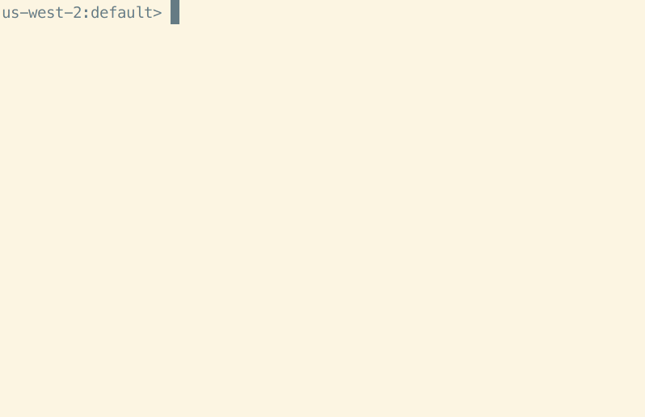

AthenaをCLIベースで実行する（AWS CLI、athenacli）
s3_spectrumというデータベースを対象にAthenaのクエリを実行していく。（このデータベースはredshift spectrumの検証時に作ったデータベースの使い回し）
AWS CLI
AWS CLIの場合は、start-query-executionで実行してクエリ実行IDを取得して別のAPIで結果を確認ということになる。（ややこしい）
start-query-execution
aws athena start-query-execution --query-string "select * from supplier limit 2;" --query-execution-context Database=s3_spectrum --result-configuration OutputLocation=s3://xxxx/
get-query-execution
aws athena get-query-execution --query-execution-id 16751da3-a267-4958-91dd-678c02d2af26
get-query-results
aws athena get-query-results --query-execution-id 16751da3-a267-4958-91dd-678c02d2af26
実行結果
get-query-resultsではJSON形式で出力されるので、必要に応じてjqコマンドで整形するか、S3側に出力されるCSVデータをダウンロードして確認する方法が良いかもしれない。
[ec2-user@ip-10-0-1-31 ~]$ aws athena start-query-execution --query-string "select * from supplier limit 2;" --query-execution-context Database=s3_spectrum --result-configuration OutputLocation=s3://xxxx/
{
"QueryExecutionId": "16751da3-a267-4958-91dd-678c02d2af26"
}
[ec2-user@ip-10-0-1-31 ~]$ aws athena get-query-execution --query-execution-id 16751da3-a267-4958-91dd-678c02d2af26
{
"QueryExecution": {
"QueryExecutionId": "16751da3-a267-4958-91dd-678c02d2af26",
"Query": "select * from supplier limit 2",
"StatementType": "DML",
"ResultConfiguration": {
"OutputLocation": "s3://xxxx/16751da3-a267-4958-91dd-678c02d2af26.csv"
},
"QueryExecutionContext": {
"Database": "s3_spectrum"
},
"Status": {
"State": "SUCCEEDED",
"SubmissionDateTime": 1625791317.39,
"CompletionDateTime": 1625791318.366
},
"Statistics": {
"EngineExecutionTimeInMillis": 761,
"DataScannedInBytes": 332580,
"TotalExecutionTimeInMillis": 976,
"QueryQueueTimeInMillis": 191,
"QueryPlanningTimeInMillis": 89,
"ServiceProcessingTimeInMillis": 24
},
"WorkGroup": "primary"
}
}
[ec2-user@ip-10-0-1-31 ~]$ aws athena get-query-results --query-execution-id 16751da3-a267-4958-91dd-678c02d2af26
{
"ResultSet": {
"Rows": [
{
"Data": [
{
"VarCharValue": "s_suppkey"
},
{
"VarCharValue": "s_name"
},
～省略～
},
"UpdateCount": 0
}
athenacli
AthenaCLIはAthenaサービス用のコマンドラインインターフェース（CLI）で、自動補完やシンタックスハイライトを行うことができ、postgresqlやmysql用のCLIと同じようなもの。AWS CLIのように何度もAWS CLIを叩かなくて1度のクエリで結果までCSV形式（もしくは見やすい形式）で見れる。

athenacliのインストール
pip install athenacli
設定ファイルの編集
設定ファイルは~/.athenacli/athenaclircにあるので編集する
vi ~/.athenacli/athenaclirc
Regionとs3_staging_dirだけ定義。IAMロールで実行しているため、アクセスキー等は省略
[aws_profile default]
# If you are a user of aws cli, you might want to use some configurations of aws cli,
# please refer to https://athenacli.readthedocs.io/en/latest/awsconfig.html for more infomation.
aws_access_key_id = ''
aws_secret_access_key = ''
region = 'ap-northeast-1' # e.g us-west-2, us-east-1
# Add role_arn to assume a role required for Athena access
role_arn = '' # e.g. arn:aws:iam::987654321000:role/MyAthenaAccessRole
# Amazon S3 staging directory where query results are stored
# NOTE: S3 should in the same region as specified above.
# The format is 's3://<your s3 directory path>'
s3_staging_dir = 's3://athenadatacsv/'
# Name of athena workgroup that you want to use
work_group = 'primary' # e.g. primary
～中略～
環境変数を使っても実行は出来る。
export AWS_ACCESS_KEY_ID=YOUR_ACCESS_KEY_ID
export AWS_SECRET_ACCESS_KEY=YOUR_SECRET_ACCESS_KEY
export AWS_DEFAULT_REGION=ap-northeast-1
export AWS_ATHENA_S3_STAGING_DIR=s3://YOUR_S3_BUCKET/path/to/
実行
引数にSQLを渡して実行するパターン
[ec2-user@ip-10-0-1-31 .athenacli]$ athenacli s3_spectrum -e 'select * from supplier limit 2'
s_suppkey,s_name,s_address,s_city,s_nation,s_region,s_phone
1,Supplier#000000001," N kD4on9OM Ipw3,gf0J",PERU 0,PERU,AMERICA,27-989-741-2988
2,Supplier#000000002,89eJ5ksX3Imx,ETHIOPIA 1,ETHIOPIA,AFRICA,15-768-687-3665
[ec2-user@ip-10-0-1-31 .athenacli]$
コマンドライン上で実行するパターン
[ec2-user@ip-10-0-1-31 .athenacli]$ athenacli s3_spectrum
ap-northeast-1:s3_spectrum> select * from supplier limit 2;
+-----------+--------------------+-----------------------+------------+----------+----------+-----------------+
| s_suppkey | s_name | s_address | s_city | s_nation | s_region | s_phone |
+-----------+--------------------+-----------------------+------------+----------+----------+-----------------+
| 1 | Supplier#000000001 | N kD4on9OM Ipw3,gf0J | PERU 0 | PERU | AMERICA | 27-989-741-2988 |
| 2 | Supplier#000000002 | 89eJ5ksX3Imx | ETHIOPIA 1 | ETHIOPIA | AFRICA | 15-768-687-3665 |
+-----------+--------------------+-----------------------+------------+----------+----------+-----------------+
2 rows in set
Execution time: 773 ms, Data scanned: 320.58 KB, Approximate cost: $0.00
Time: 1.349s
ap-northeast-1:s3_spectrum>
細かい実行時の設定はgithub上のreadmeを参照。
参考
[dbcli/athenacli: AthenaCLI is a CLI tool for AWS Athena service that can do auto-completion and syntax highlighting.](dbcli/athenacli: AthenaCLI is a CLI tool for AWS Athena service that can do auto-completion and syntax highlighting. )
関連しているかもしれない記事
- ALB(Application Load Balancer)のログをAthenaで分析
- AWSの使用料をPythonでLINEに通知する
- PostgreSQLの拡張機能 pg_proctab をAurora/RDSから触ってみる
- Redshiftのクエリキャンセル
- RDS OracleにJDBCRunnerを実行